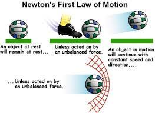
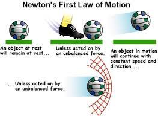

Concepts Of Physics
Concepts Of Physics
Concepts Of Physics
Concepts Of Physics
Newton's first law states that if a body is at rest or moving at a constant speed in a straight line, it will remain at rest or keep moving in a straight line at constant speed unless it is acted upon by a force. In fact, in classical Newtonian mechanics, there is no important distinction between rest and uniform motion in a straight line; they may be regarded as the same state of motion seen by different observers, one moving at the same velocity as the particle and the other moving at constant velocity with respect to the particle. This postulate is known as the law of inertia.
The law of inertia was first formulated by Galileo Galilei for horizontal motion on Earth and was later generalized by Rene Descartes. Although the principle of inertia is the starting point and the fundamental assumption of classical mechanics, it is less than intuitively obvious to the untrained eye. In Aristotelian mechanics and in ordinary experience, objects that are not being pushed tend to come to rest. The law of inertia was deduced by Galileo from his experiments with balls rolling down inclined planes.
For Galileo, the principle of inertia was fundamental to his central scientific task: he had to explain how is it possible that if Earth is really spinning on its axis and orbiting the Sun, we do not sense that motion. The principle of inertia helps to provide the answer: since we are in motion together with Earth and our natural tendency is to retain that motion, Earth appears to us to be at rest. Thus, the principle of inertia, far from being a statement of the obvious, was once a central issue of scientific contention. By the time Newton had sorted out all the details, it was possible to accurately account for the small deviations from this picture caused by the fact that the motion of Earth's surface is not uniform motion in a straight line. In the Newtonian formulation, the common observation that bodies that are not pushed tend to come to rest is attributed to the fact that they have unbalanced forces acting on them, such as friction and air resistance.
 

Newton's second law of motion can be formally stated as follows:
The acceleration of an object as produced by a net force is directly proportional to the magnitude of the net force, in the same direction as the net force, and inversely proportional to the mass of the object.
This verbal statement can be expressed in equation form as follows:
a = Fnet / m
The above equation is often rearranged to a more familiar form as shown below. The net force is equated to the product of the mass times the acceleration.
Fnet = m.a
In this entire discussion, the emphasis has been on the net force. The acceleration is directly proportional to the net force; the net force equals mass times acceleration; the acceleration in the same direction as the net force; an acceleration is produced by a net force.
Newton's third law states that when two bodies interact, they apply forces to one another that are equal in magnitude and opposite in direction. The third law is also known as the law of action and reaction. This law is important in analyzing problems of static equilibrium, where all forces are balanced, but it also applies to bodies in uniform or accelerated motion. The forces it describes are real ones, not mere bookkeeping devices. For example, a book resting on a table applies a downward force equal to its weight on the table. According to the third law, the table applies an equal and opposite force to the book. This force occurs because the weight of the book causes the table to deform slightly so that it pushes back on the book like a coiled spring.
If a body has a net force acting on it, it undergoes accelerated motion in accordance with the second law. If there is no net force acting on a body, either because there are no forces at all or because all forces are precisely balanced by contrary forces, the body does not accelerate and may be said to be in equilibrium. Conversely, a body that is observed not to be accelerated may be deduced to have no net force acting on it.